2. 事前準備:人と景品
この章でできること参加者のアカウントと受付QR、メンバー(共通の名簿)、景品を準備できます。
準備は、管理者のホーム画面から行います。管理者アカウントでログインすると表示されます。
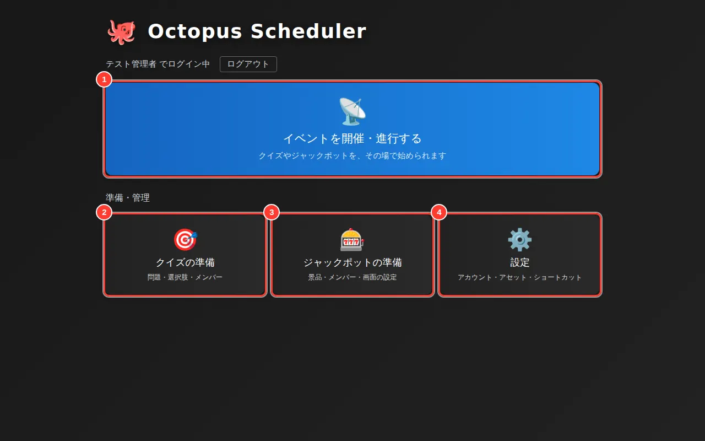
- 1イベントを開催・進行する(当日はここから)
- 2クイズの問題や選択肢をつくる
- 3景品・メンバー・画面を整える
- 4アカウント・素材
2-1. 参加者を登録して受付QRを印刷する
「設定」→「アカウント」タブを開きます。参加者を1人ずつ「アカウント追加」で登録するか、すでに登録した人に受付QRを発行します。
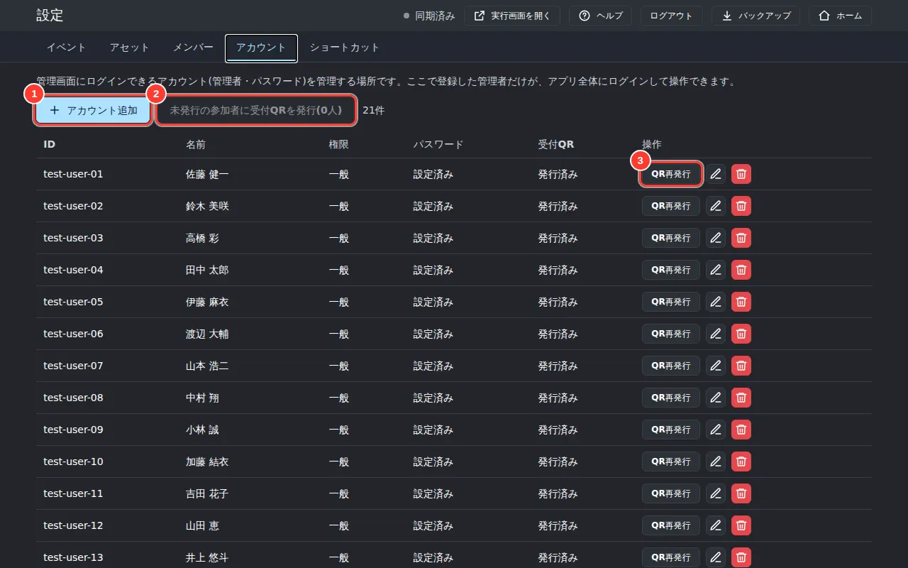
- 1参加者(や管理者)を1人ずつ追加する
- 2受付QRをまとめて発行して印刷する
- 3QRをなくした人に再発行する
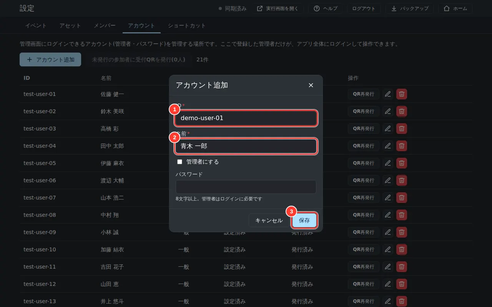
- 1ログインIDを入れる(英数字)
- 2表示される名前を入れる
- 3保存する
登録しただけの人(QR未発行)がいると、「未発行の参加者に受付QRを発行」が押せるようになります。
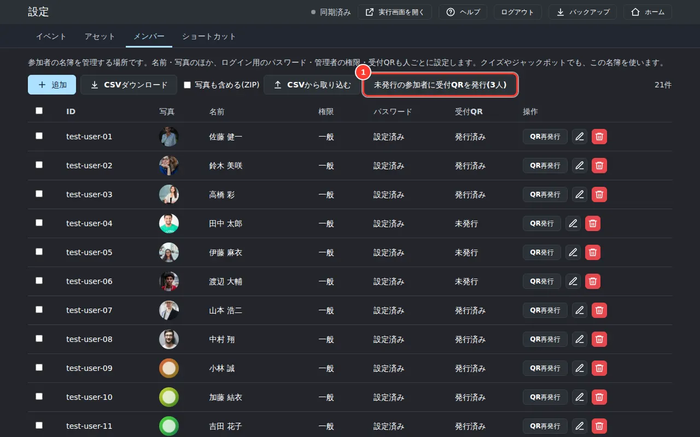
- 1未発行の人にまとめてQRを発行する
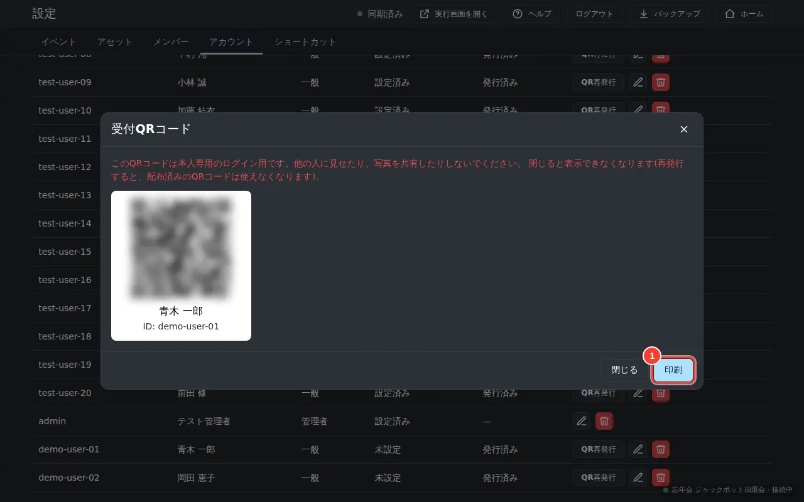
- 1印刷して参加者に配る(QRはここでしか表示されない)
注意QRコードは、この画面を閉じると二度と表示できません。必ず印刷してから閉じてください。なくした場合は「QR再発行」を使います(以前のQRは使えなくなります)。QRは本人専用です。写真を共有しないよう参加者に伝えてください。
2-2. メンバー(共通の名簿)を登録する
「設定」→「メンバー」タブが、共通の名簿です。ここに登録した人は、ジャックポットやクイズなど、すべてのゲームの管理画面から使えます。顔写真も名簿に保存されるので、会場PCがどのパソコンでも、同じ写真が表示されます。
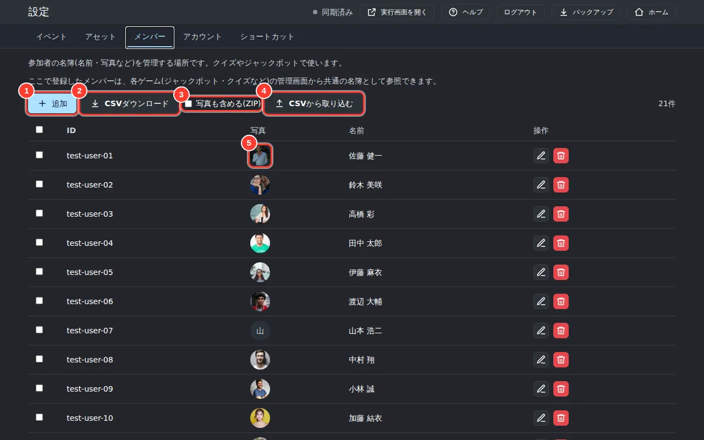
- 1名簿に1人ずつ追加する
- 2名簿をCSVで書き出す
- 3書き出すときに写真も入れる(ZIPになる)
- 4CSVやZIPからまとめて取り込む
- 5顔写真(写真がない人は、頭文字のアイコン)
1人ずつ登録する場合:「追加」を押し、ID(空欄なら自動で付きます)と名前を入れます。「写真(任意)」で写真を選ぶと、長辺512pxに縮小して保存されます。写真をやめたいときは、編集ダイアログの「写真を外す」を押します。
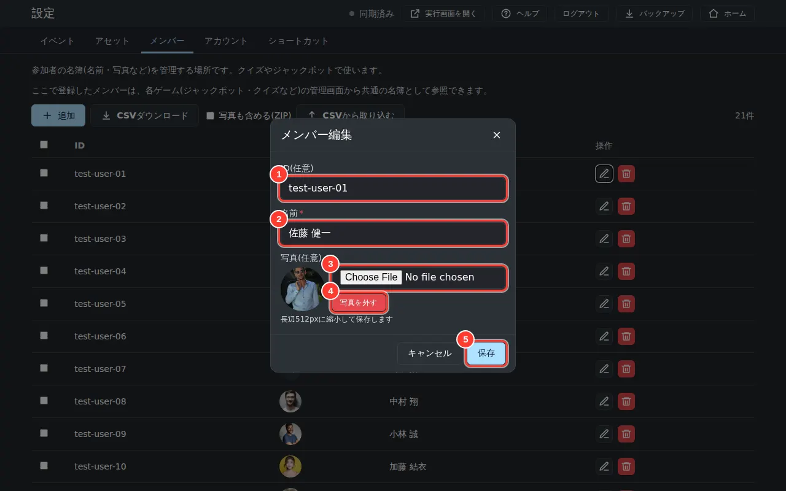
- 1ID(追加のときだけ入力できる)
- 2名前
- 3写真を選ぶ
- 4写真を外す
- 5保存する
まとめて登録する場合:「CSVダウンロード」で、いまの名簿をCSVで書き出せます。1行目は見出しで、ID,名前,写真の形です。「写真も含める(ZIP)」にチェックを入れると、写真の画像も入ったZIPになります。これを編集して「CSVから取り込む」で戻せば、まとめて追加・更新できます。
- 「CSVから取り込む」を押す。
- 「CSV または ZIP」で、CSVか、写真つきで書き出したZIPを選ぶ。
- CSVの「写真」列にファイル名を書いたときは、「画像フォルダ(任意)」でその画像が入ったフォルダを選ぶ(ZIPなら不要)。
- プレビューで、行ごとに「追加」「更新」「変更なし」「エラー」を確かめる。エラーの行は取り込まれません。
- 「取り込む」を押す。終わると、取り込んだ結果が表示されます。
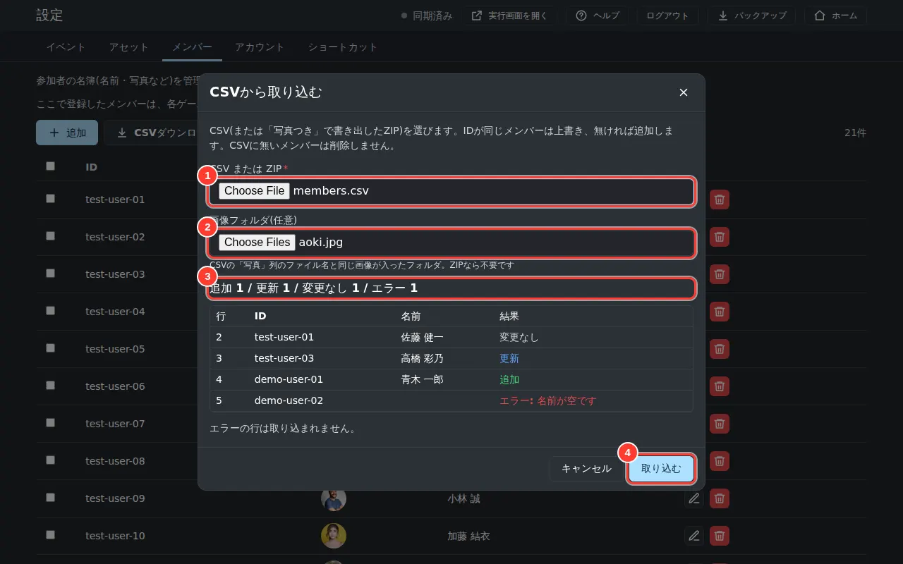
- 1CSVまたはZIPを選ぶ
- 2画像フォルダを選ぶ(任意)
- 3追加・更新・変更なし・エラーの件数と、行ごとの結果
- 4確認できたら取り込む
ポイントIDが同じ人は上書きされ、IDがなければ新しく追加されます。CSVに載っていない人は、削除されません。
ジャックポットのメンバーにする:「ジャックポットの準備」→「メンバー」タブを開き、「追加」で「共有マスタから選択」を選ぶと、名簿にいる人を選べます。ここでは、抽選に使うランクと当選しやすさを決めます。
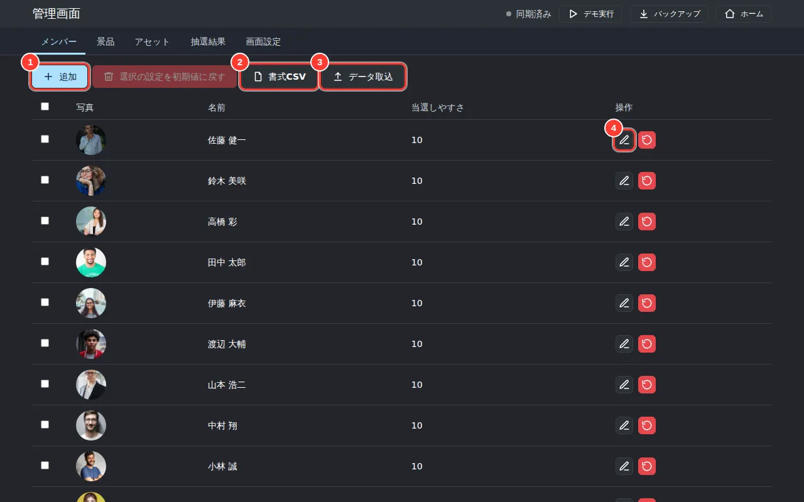
- 1名簿から選んで、メンバーを追加する
- 2ランク・当選しやすさを入れるCSVのひな形をダウンロード
- 3ランク・当選しやすさをCSVでまとめて設定する
- 4ランク・当選しやすさを編集する
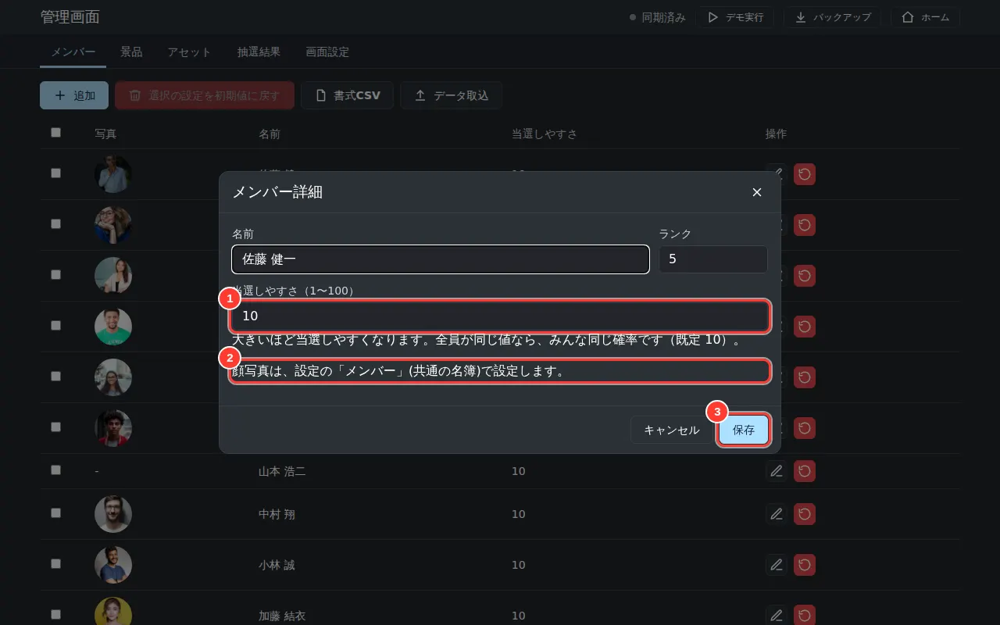
- 1当選しやすさ(1〜100)
- 2顔写真は、ここではなく設定の「メンバー」で設定する
- 3保存する
ランクと当選しやすさをまとめて設定する場合:「書式CSV」を押すと、いまのメンバーが入った状態のCSVが書き出されます。1行目は見出しで、id,rank,weightの形です。ランクと当選しやすさを書き換えて、「データ取込」から読み込みます。
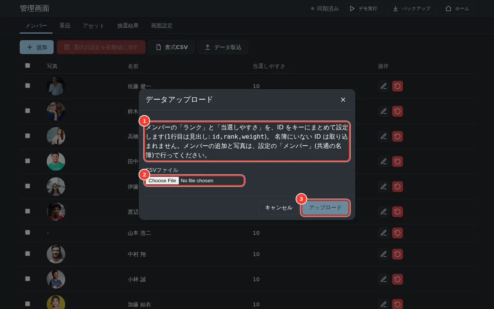
- 1設定できる列(id,rank,weight)の説明
- 2CSVファイルを選ぶ
- 3取り込みを始める
ポイントデータ取込は、IDごとにランクと当選しやすさを設定するだけです。名簿にいないIDの行は、読み飛ばされます。「当選しやすさ」は1〜100で、全員が同じ値なら、全員が同じ確率で当選します。
2-3. 景品を登録する
「景品」タブで、景品の名前・画像・抽選アニメーションを設定します。「データ取込」でまとめて登録することもできます。
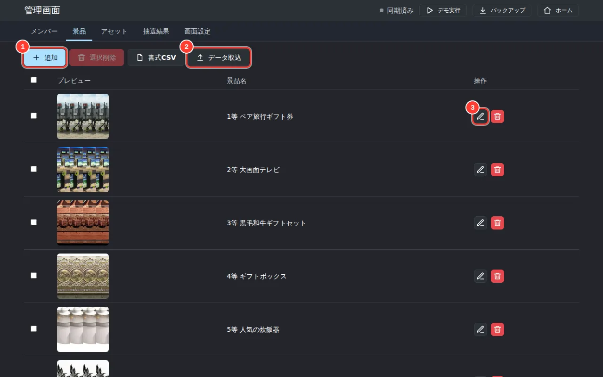
- 1景品を追加する
- 2CSVと画像をまとめて取り込む
- 3景品の内容を編集する
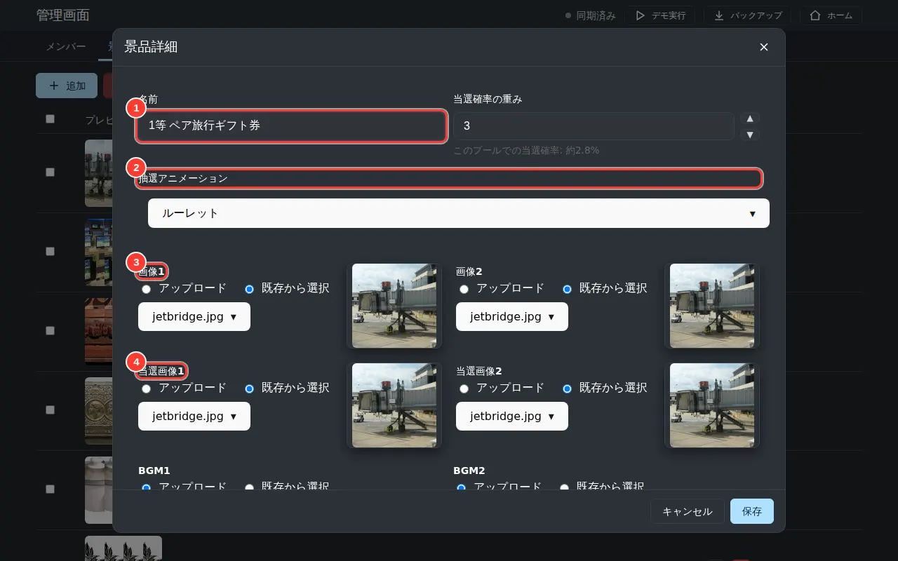
- 1景品の名前
- 2抽選アニメーション(ルーレット/スロット)
- 3景品画像(ルーレットなどに出る)
- 4当選したときに大きく出る画像
ポイント「画像1」「画像2」は抽選中に出る絵、「当選画像1」「当選画像2」は当選したときに大きく出る絵です。BGMも景品ごとに選べます。
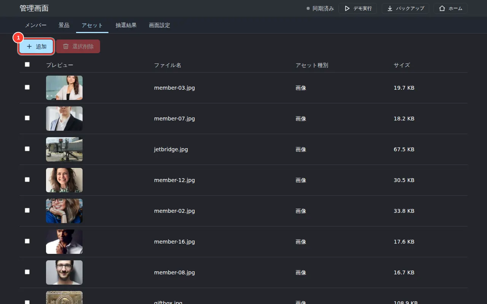
- 1画像・音声を追加する